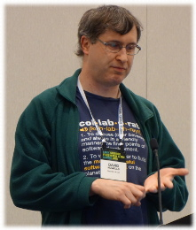

xstat()
The proposed xstat() system call, which is meant to extend the functionality of the stat() call to get additional file-status information, has been discussed quite a bit over the years, but has never been merged. The main impediment seems to be a lot of bikeshedding about how much information—and which specific pieces—will be returned. David Howells led a short filesystem-only discussion on xstat() at the 2016 Linux Storage, Filesystem, and Memory-Management Summit.
Howells presented a long list of possibilities that could be added to the structure for additional file status information to be returned by a call like xstat()—things like larger timestamps, the creation (or birth) time for a file, data version number (for some filesystems), inode generation number, and more. In general, there are more fields, with some that have grown larger, for xstat().

There is also space at the end of the structure for growth. There are ways for callers to indicate what information they are interested in, as well as ways for the filesystem to indicate which pieces of valid information have been returned.
Howells noted that Dave Chinner wanted more I/O parameters (e.g. preferred read and write sizes, erase block size). There were five to seven different numbers that Chinner wanted, but those could always be added later, he said.
There are also some useful information flags that will be returned. Those will indicate if the file is a kernel file (e.g. in /proc or /sys), if it is compressed (and thus will result in extra latency when accessed), if it is encrypted, or if it is a sparse file. Windows has many of these indications.
But Ted Ts'o complained that there are two different definitions of a compressed file. It could mean that the file is not compressible, because it has already been done, or it could mean that the filesystem has done something clever and a read will return the real file contents. It is important to clearly define what the flag means. The FS_IOC_GETFLAGS ioctl() command did not do so, he said, so he wanted to ensure that the same mistake is not made with xstat().
There are other pieces of information that xstat() could return, Howells said. For example, whether accessing the file will cause an automount action or getting "foreign user ID" information for filesystems that don't have Unix-style UIDs or that have UIDs that do not map to the local system. There are also the Windows file attributes (archive, hidden, read-only, and system) that could be returned.
Ts'o suggested leaving out anything that did not have a clear definition of what it meant. That might help get xstat() merged. Others can be added later, he said.
Howells then described more of the functionality in his current version. There are three modes of operation. The standard mode would work the same way that stat() works today; it would force a sync of the file and retrieve an update from the server (if there is one). The second would be a "sync if we need to" mode; if only certain information that is stored locally is needed, it would simply be returned, but if the information requested required an update from the server (e.g. atime), that will be done. The third, "no sync" mode, means that only local values will be used; "it might be wrong, but it will be fast". For local filesystems, all three modes work the same way.
Jeff Layton asked: "How do we get it in without excessive bikeshedding?" He essentially answered his own question by suggesting that Howells start small and simply add "a few things that people really want". Joel Becker suggested that only parameters with "actual users in some upstream" be supported. That could help trim the list, he said.
Howells said that he asked for comments from various upstreams, but that only Samba had responded. Becker reiterated that whatever went in should be guided by actual users, since it takes work to support adding these bits of information. Howells agreed, noting that leaving extra space and having the masks and flags will leave room for expansion.
As it turns out, Howells posted a new patch set after LSFMM that reintroduces xstat() as the statx() system call.
| Index entries for this article | |
|---|---|
| Kernel | Filesystems/stat() |
| Kernel | System calls |
| Conference | Storage, Filesystem, and Memory-Management Summit/2016 |